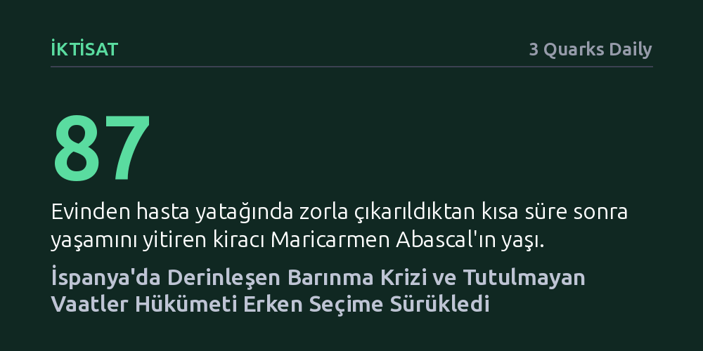

IKTISAT · 3 Quarks Daily · 2026-10-12
Madrid'de 87 yaşındaki bir kiracının tahliyesiyle patlak veren kitlesel barınma protestoları, İspanya'yı erken seçime ve genel grev kararına taşıdı. Sol koalisyonun sosyal konut ve kira denetimi vaatlerini yerine getirememesi, öfkeyi 15 yıl sonra yeniden meydanlara indirdi.
Finansallaşan konut piyasasında reformları ertelemenin, sol iktidarları dahi meşruiyet krizine ve erken seçime sürükleyecek bir toplumsal patlama yaratabileceğini gösteriyor.

Madrid'in simgesel Puerta del Sol meydanı, 2011'deki 'Öfkeliler' (Indignados) hareketinden on beş yıl sonra bir kez daha siyasi sistemi kilitleyen kitlesel bir halk hareketinin merkezine dönüştü. İspanya'yı derinden sarsan bu yeni dalganın fitilini, başkentin merkezinde 1956 yılından beri tavan fiyat korumalı dairesinde yaşayan 87 yaşındaki Maricarmen Abascal'ın 23 Eylül'de zorla tahliye edilmesi ateşledi. Mülkü satın alan Urbagestión adlı yatırım fonunun yasal bir boşluktan yararlanarak kirayı beş katına çıkarması ve yaşlı kadının hasta yatağında evinden çıkarıldıktan kısa süre sonra hayatını kaybetmesi, toplumun adalet duygusunu derinden yaraladı.
Bu trajik olay, halihazırda tırmanan barınma krizinde bardağı taşıran damla oldu ve ülkede hızla siyasi bir fırtınaya yol açtı. Hükümet artan toplumsal baskı karşısında erken seçim kararı almak zorunda kalırken, protestolar ülke geneline yayıldı. Madrid Kiracılar Sendikası (Sindicato de Inquilinas) öncülüğünde Puerta del Sol'de kurulan çadır alanı kısa sürede direnişin merkez üssü haline geldi. Açık hava genel meclislerinde alınan kararlar arasında en çok yankı uyandıranı ise seçimlerden birkaç hafta önce, 11 Kasım'da barınma hakkı için ülke çapında genel greve gidileceğinin duyurulması oldu.
Bugün yaşanan patlama tesadüfi bir krizden ibaret değil; temelleri siyasi iktidarın yerine getiremediği taahhütlerde yatıyor. Pedro Sánchez liderliğindeki merkez sol Sosyalist İşçi Partisi (PSOE) öncülüğündeki ilerici koalisyon, 2023 yılında göreve başlarken konut meselesini hükümet programının en üst sırasına yerleştirmişti. Verilen sözler oldukça iddialıydı: kitlesel sosyal konut üretimi, kiralara yasal tavan fiyat getirilmesi ve kamu yararının spekülatif rant mantığına karşı korunması vadedilmişti.
Ancak bu iddialı hedefler gerçeğe dönüşemedi. Politika metinlerinde vadedilen dönüşüm sahada somut bir karşılık bulmadı; ne kira artışları frenlenebildi ne de sermaye fonlarının spekülatif hamlelerine set çekilebildi. Yatırım fonlarının yasal boşlukları kullanarak kiracıları kapı önüne koyduğu mevcut düzenleme zaafları giderilemeyince, kriz Abascal vakasında olduğu gibi ölümcül sonuçlar üretti.
Vadedilen reformların hayata geçirilememesinde, parlamentodaki sağ muhalefetin ve sağ partilerin denetimindeki bölgesel yönetimlerin uyguladığı sistematik engelleme politikalarının payı büyüktü. Yerel ve bölgesel yönetimler, merkezi hükümetin kira denetimlerine ve sosyal konut hamlelerine direnerek bu adımların etkisiz kalmasında önemli rol oynadı.
Fakat faturanın tamamını sağ kanada kesmek eksik kalır; asıl kırılma Sosyalist Parti'nin kendi içindeki ikircikli tutumunda yaşandı. Kabinedeki sosyalist bakanlar, konut piyasasına yönelik bağlayıcı ve sert düzenlemeleri 'aşırı müdahale' olarak nitelendirip bu adımlardan duydukları rahatsızlığı defalarca dile getirdiler. Piyasa dinamiklerini doğrudan karşılarına almaktan kaçınan bu çekingenlik, reform sürecini felç etti ve sokaktaki halkın siyaset kurumuna duyduğu inancı bütünüyle tüketti.
İspanya'da yaşananlar, konut sorununun artık teknik bir piyasa düzenlemesi olmaktan çıkıp temel bir rejim ve meşruiyet krizine dönüştüğünü ortaya koyuyor. 2011'de kemer sıkma politikalarına karşı Puerta del Sol'ü dolduran öfke, bugün finansallaşan gayrimenkul düzenine ve bu düzene dokunmakta tereddüt eden iktidara yönelmiş durumda. Kiracılar Sendikası öncülüğündeki örgütlenme, barınmayı temel bir anayasal hak olarak savunurken geleneksel siyaset sınıfını kaçamayacağı bir hesaplaşmaya zorluyor.
11 Kasım'daki genel grev çağrısı ve yaklaşan erken seçimler, İspanya'yı kritik bir yol ayrımına sokuyor. Rant mantığı ile temel yaşam hakkı arasındaki çelişki artık parlamentonun dar sınırlarını aşmış durumda; sokağın ve kiracı meclislerinin belirlediği bu yeni hat, ülkenin siyasi dengelerini önümüzdeki dönemde derinden dönüştürme potansiyeli taşıyor.